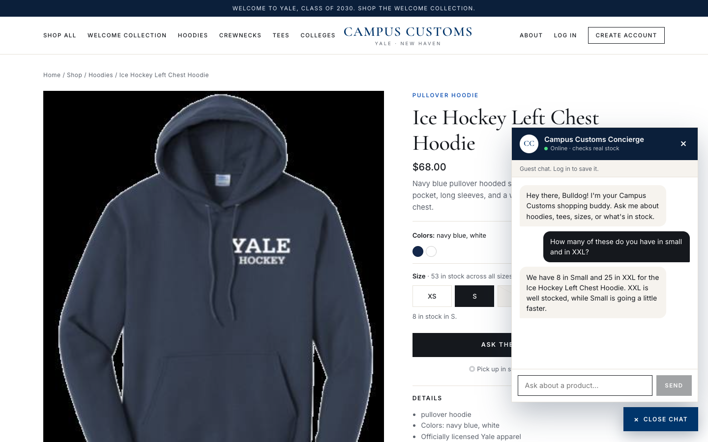
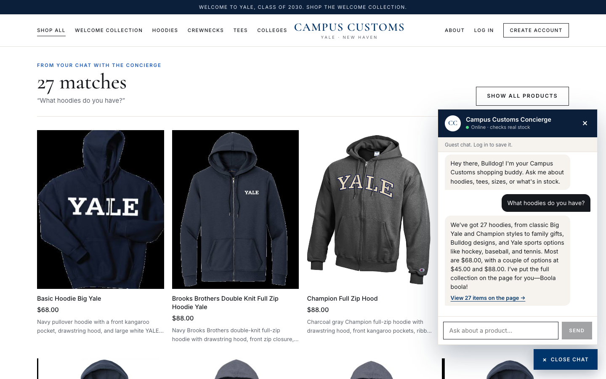
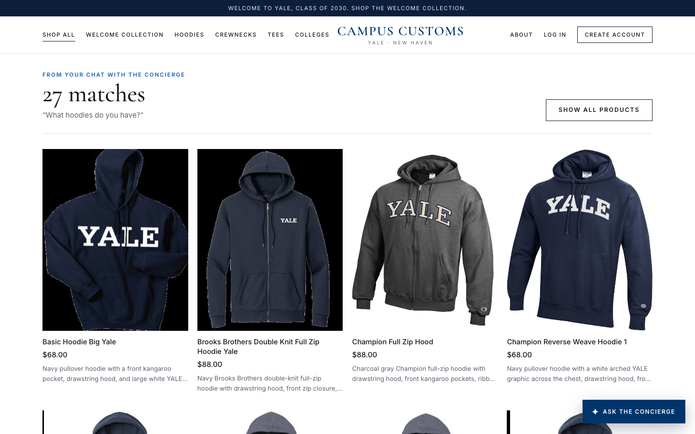
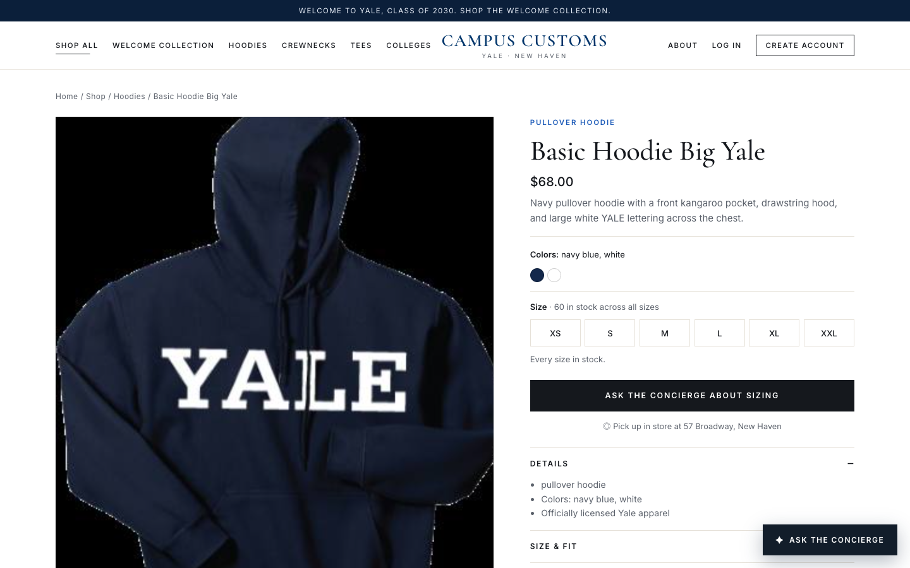
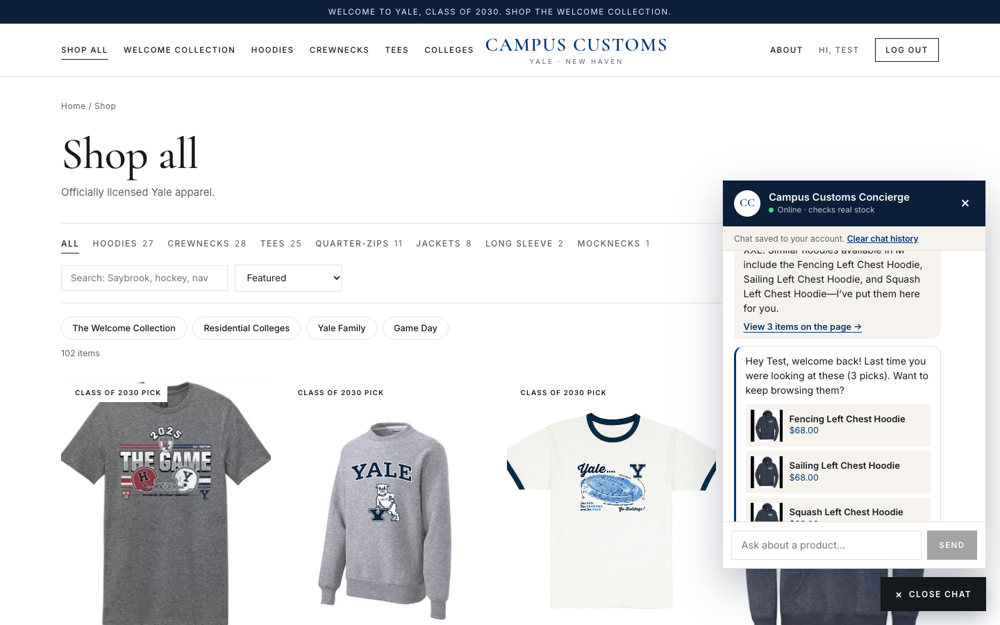
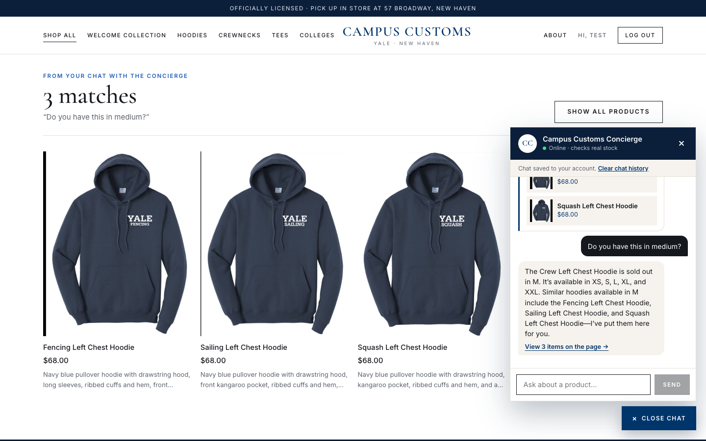

1. Inventory chat lookup
PASSOn the Ice Hockey Left Chest Hoodie page, the shopper asked the chat: “How many of these do you have in small and in XXL?”

Chat reply: We have 8 in Small and 25 in XXL for the Ice Hockey Left Chest Hoodie. XXL is well stocked, while Small is going a little faster.
Database truth (inventory table for ice-hockey-left-chest-hoodie; the two sizes asked about are highlighted):
| XS 20 | S 8 | M sold out | L sold out | XL sold out | XXL 25 |
2. Dynamic search cards
PASSFrom the homepage, the shopper asked: “What hoodies do you have?”

Chat reply: We’ve got 27 hoodies, from classic Big Yale and Champion styles to family gifts, Bulldog designs, and Yale sports options like hockey, baseball, and tennis. Most are $68.00, with a couple of options at $45.00 and $88.00. I’ve put the full collection on the page for you—Boola boola!


3. Usability feature (Problem 9): “Welcome back, pick up where you left off”
PASSThe seeded test user logged in. The chat opened on its own, greeted them by name, and brought back what they were last looking at, with a clickable product card.

chat_messages table, with no AI call.Welcome message: Hey Test, welcome back! Last time you were looking at these (3 picks). Want to keep browsing them?
Also verified: sold-out alternatives (Problem 9, agent improvement)

Chat reply: The Crew Left Chest Hoodie is sold out in M. It’s available in XS, S, L, XL, and XXL. Similar hoodies available in M include the Fencing Left Chest Hoodie, Sailing Left Chest Hoodie, and Squash Left Chest Hoodie—I’ve put them here for you.
Database check: stock in size M for each suggested item:
- Fencing Left Chest Hoodie: 15 in M
- Sailing Left Chest Hoodie: 25 in M
- Squash Left Chest Hoodie: 5 in M